SEJAK KAPAN KITA MEMAKAINYA?
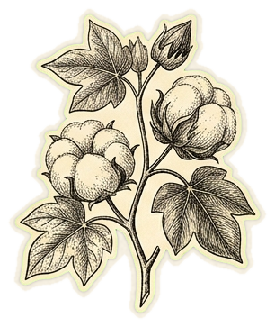

LINEN & WOL KUNO
Pernah kepikiran nggak, sejak kapan manusia mulai menggunakan handuk?
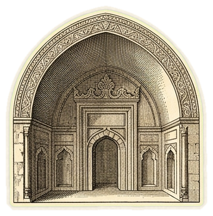
BURSA, TURKI • ABAD KE-17
ERA OTTOMAN
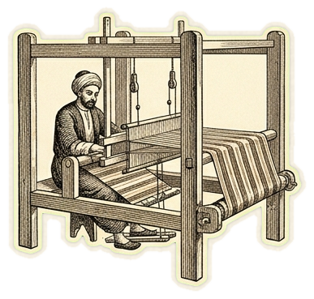
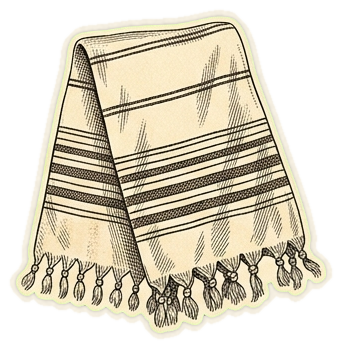
KAIN TENUN "PESTEMAL"
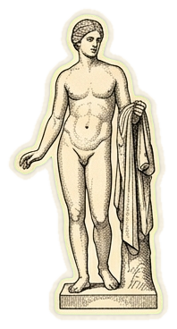
Sejarah handuk erat kaitannya dengan Bursa, Turki. Pada abad ke-17, Ottoman menciptakan tenunan Pestemal.
ABAD KE-19 • REVOLUSI TEKSTIL
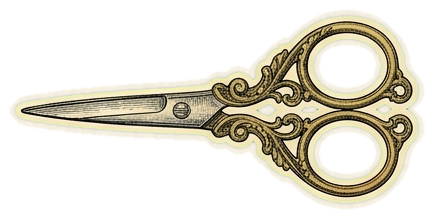
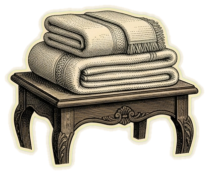
DAYA SERAP TINGGI
Pada abad ke-19, handuk katun bertekstur tebal dengan daya serap tinggi mulai populer ke seluruh dunia.
DARI TURKI KE SELURUH DUNIA
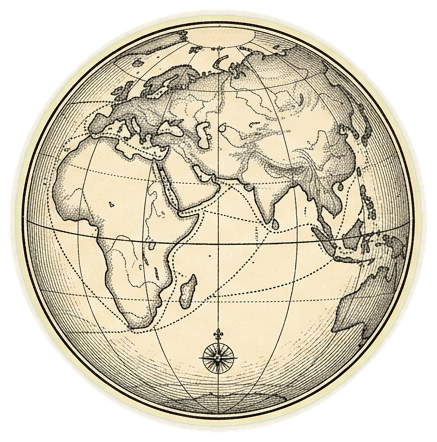
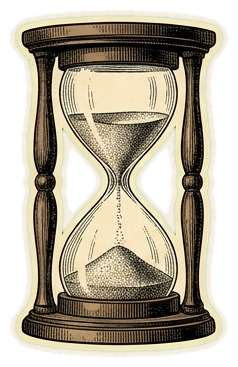
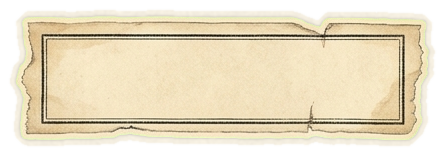
SEJARAH RATUSAN TAHUN
Benda yang kita anggap sederhana ini, ternyata punya sejarah panjang selama ratusan tahun.
SEJARAH SELEMBAR HANDUK
BURSA 1650 — DUNIA HARI INI
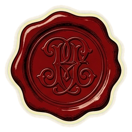
TIDAK SESINGKAT WAKTU KITA MEMAKAINYA ✨
Ingatlah, handuk punya perjalanan sejarah yang nggak sesingkat waktu kita menggunakannya.